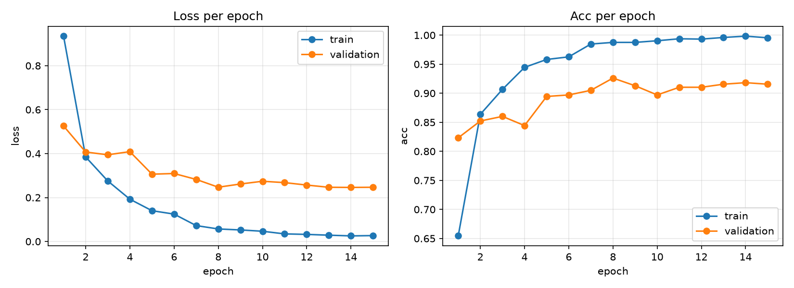
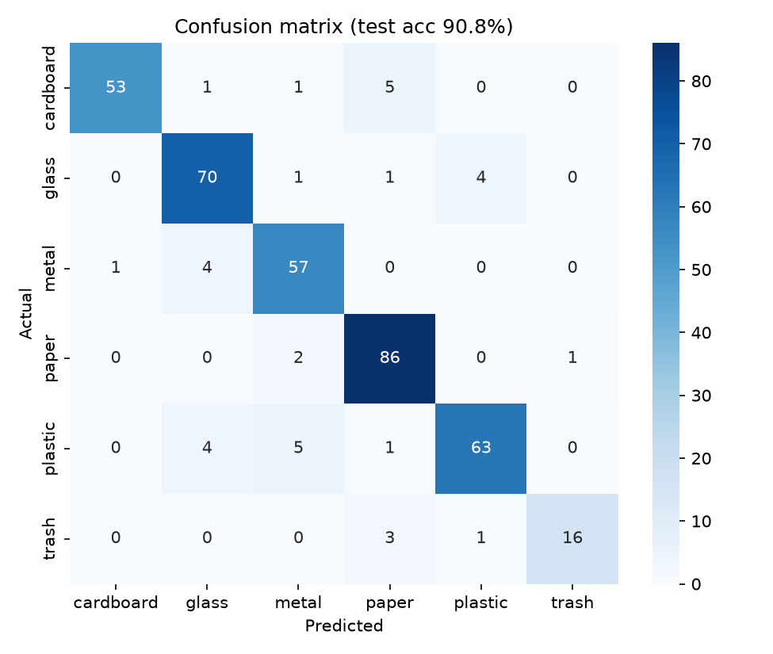
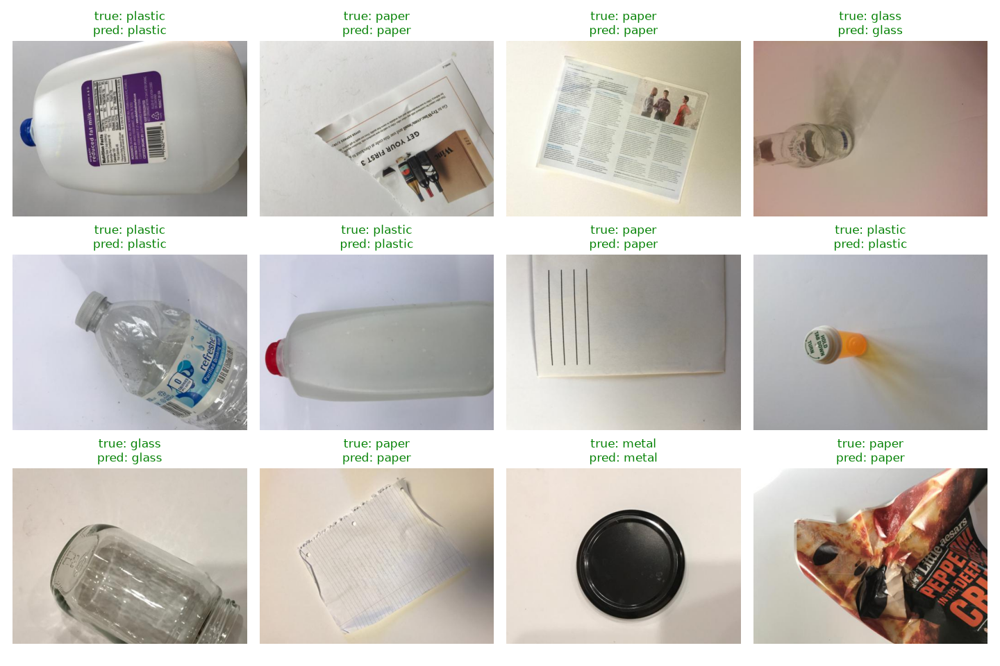

Waste Classification Using Images — viva sheet
Project 4. Code: train.py, predict.py in D:\files\stud\fuzzy\miniproject. Every number here comes from the actual training run (outputs/train_log.txt). Back: Interview Prep
1. 30-second pitch
2. Project at a glance
| Item | Value |
|---|---|
| Task | Image classification, single label, 6 classes |
| Dataset | TrashNet (Thung & Yang, Stanford, 2016): 2,527 images |
| Split | 70 / 15 / 15 stratified → 1768 train, 379 validation, 380 test |
| Model | ResNet18 (18-layer residual CNN), ImageNet weights, new 6-class head |
| Input | 224 × 224 × 3 RGB, ImageNet-normalized |
| Loss / optimizer | Cross-entropy / Adam, lr = 0.0001, cosine annealing |
| Epochs / batch | 15 / 32 (56 batches per epoch) |
| Best epoch | 8 (validation accuracy 92.6%) |
| Test result | Accuracy 90.8% (345/380), macro F1 0.902 |
| Tools | Python 3.12, PyTorch 2.11, torchvision, scikit-learn, matplotlib, seaborn |
| Hardware | NVIDIA RTX 4060 Laptop GPU (CUDA) |
Pipeline
- Dataset: download TrashNet, one folder per class.
- Preprocess: stratified split, resize to 224, normalize, augment the training set.
- Model: load pre-trained ResNet18, replace the last layer with Dropout + Linear(512 → 6).
- Train: 15 epochs of Adam + cross-entropy; keep the checkpoint with the best validation accuracy.
- Evaluate: run the test set once; compute accuracy, precision, recall, F1 and the confusion matrix.
- Demo:
predict.pyclassifies any new photo with top-3 confidences.
3. Problem definition
- Problem: wrong sorting sends recyclable material to landfill and contaminates recycling streams. Manual sorting is slow, costly and unhygienic.
- Objective: automatically classify a waste item from its photo into 6 categories, with at least 85% test accuracy.
- Intended use: a camera on a smart bin or a recycling-plant conveyor belt, or a mobile app that tells users which bin to use.
- Type of ML problem: supervised learning, multi-class classification. Input: an image. Output: one of 6 labels plus a probability for each.
4. Dataset — TrashNet
| Class | Images | Share | Test images |
|---|---|---|---|
| cardboard | 403 | 15.9% | 60 |
| glass | 501 | 19.8% | 76 |
| metal | 410 | 16.2% | 62 |
| paper | 594 | 23.5% | 89 |
| plastic | 482 | 19.1% | 73 |
| trash | 137 | 5.4% | 20 |
| Total | 2527 | 100% | 380 |
- Source: collected by Gary Thung and Mindy Yang for a Stanford CS229 project (2016). Downloaded from Hugging Face (
garythung/trashnet, filedataset-resized.zip). - Each photo shows one object on a white background, 512 × 384 pixels.
- Imbalanced: trash has only 137 images, about 4× fewer than paper. This explains why trash has the lowest recall.
- Labelling: the folder name is the label (
ImageFoldersorts the folders alphabetically: cardboard = 0 … trash = 5).
5. Data preprocessing
| Step | What | Why |
|---|---|---|
| Stratified split | 70/15/15, seed 42 | Each set keeps the same class proportions; the fixed seed makes it reproducible |
| Resize | 224 × 224 | The input size ResNet18 was pre-trained on |
| ToTensor | Pixels 0–255 → 0–1, shape H×W×C → C×H×W | The format PyTorch expects |
| Normalize | (x − mean) / std with ImageNet mean (0.485, 0.456, 0.406) and std (0.229, 0.224, 0.225) | The pre-trained weights expect inputs on the same scale they were trained with |
| Augmentation (train only) | Random crop (70–100%), horizontal flip, ±15° rotation, colour jitter | Creates new variations every epoch → less overfitting on a small dataset |
train_tf = transforms.Compose([
transforms.RandomResizedCrop(224, scale=(0.7, 1.0)), # random zoom/crop, output 224x224
transforms.RandomHorizontalFlip(), # mirror 50% of the time
transforms.RandomRotation(15), # rotate -15..+15 degrees
transforms.ColorJitter(0.2, 0.2, 0.2), # brightness, contrast, saturation
transforms.ToTensor(),
transforms.Normalize(MEAN, STD),
])
tr, rest = train_test_split(idx, test_size=0.30, stratify=labels, random_state=SEED) # 70% train va, te = train_test_split(rest, test_size=0.50, stratify=labels[rest], random_state=SEED) # 15% / 15%
The second split halves the remaining 30%. stratify= keeps class ratios equal in every set.
6. CNN concepts (expect theory questions)
| Layer / idea | What it does |
|---|---|
| Convolution | Each filter is multiplied with each image patch and summed → a feature map. Early layers find edges and colours, middle layers find textures and shapes, deep layers find object parts. |
| Weight sharing | The same filter is used at every position → far fewer parameters than a dense layer, and a pattern is detected wherever it appears (translation invariance). |
| Stride / padding | Stride = step size of the filter (stride 2 halves the size). Padding adds a border so the size is kept. |
| ReLU | f(x) = max(0, x). Non-linear, cheap, and avoids vanishing gradients (unlike sigmoid). |
| Pooling | Max pooling keeps the largest value in each window → smaller maps, some position tolerance. |
| Batch normalization | Normalizes each layer's outputs per mini-batch → faster, more stable training. |
| Global average pooling | Averages each 7×7 feature map to one number → a 512-value feature vector. |
| Fully connected + softmax | Maps features to 6 scores; softmax turns them into probabilities that sum to 1. |
| Dropout | During training, randomly zeroes 30% of the features → stops the network relying on a few features (regularization). |
7. Model — ResNet18 with transfer learning
Residual connection (the "Res" in ResNet)
Transfer learning
- Why: 2,527 images is far too few to train an 11-million-parameter CNN from scratch. It would overfit. Transfer learning gives high accuracy in a few minutes.
- We fine-tune the whole network with a small learning rate (0.0001), so the pre-trained features are adjusted gently, not destroyed.
- Only the final layer is new:
Dropout(0.3) → Linear(512, 6), replacing the originalLinear(512, 1000).
Shape flow through the network
| Stage | Output shape |
|---|---|
| Input image | 3 × 224 × 224 |
| Conv 7×7, stride 2 + BN + ReLU | 64 × 112 × 112 |
| Max pool 3×3, stride 2 | 64 × 56 × 56 |
| Residual stage 1 (2 blocks) | 64 × 56 × 56 |
| Residual stage 2 | 128 × 28 × 28 |
| Residual stage 3 | 256 × 14 × 14 |
| Residual stage 4 | 512 × 7 × 7 |
| Global average pool | 512 |
| Dropout + Linear | 6 scores → softmax → 6 probabilities |
18 layers with weights = 1 first conv + 16 convs in 8 residual blocks + 1 fully connected. About 11.18 million parameters; the new head has 512 × 6 + 6 = 3,078.
def build_model(n_classes):
m = models.resnet18(weights=models.ResNet18_Weights.DEFAULT) # ImageNet weights
m.fc = nn.Sequential(nn.Dropout(0.3), nn.Linear(m.fc.in_features, n_classes)) # 512 -> 6
return m
Why a CNN and not an RNN/LSTM?
An RNN/LSTM models sequences over time (video frames, text). Our input is a single still image with no time order, so an LSTM adds nothing. A CNN is the right tool for spatial patterns.
8. Training
| Setting | Value | Reason |
|---|---|---|
| Loss | Cross-entropy | Standard for multi-class classification; heavily penalizes a confident wrong answer |
| Optimizer | Adam | Adaptive learning rate per weight (momentum + RMSprop); converges fast with little tuning |
| Learning rate | 0.0001 | Small, so pre-trained weights are only fine-tuned |
| Scheduler | Cosine annealing | LR decreases smoothly to ~0 by epoch 15 → big steps early, fine steps late |
| Batch size | 32 | Fits GPU memory; 56 weight updates per epoch |
| Epochs | 15 | Validation accuracy plateaus around epoch 8–15 |
| Checkpointing | Save when val accuracy improves | Keeps the best model (epoch 8), not just the last |
One training step (what run_epoch does per batch)
- Forward pass:
out = model(x)gives 6 scores per image. - Loss:
loss_fn(out, y)compares the scores with the true labels. - Clear gradients:
opt.zero_grad(), because PyTorch accumulates them otherwise. - Backpropagation:
loss.backward()computes ∂L/∂w for every weight (chain rule). - Update:
opt.step()moves each weight against its gradient (Adam's version of w ← w − η·∂L/∂w).
with torch.set_grad_enabled(opt is not None): # gradients only when training
for x, y in loader:
x, y = x.to(device), y.to(device) # move batch to GPU
out = model(x)
loss = loss_fn(out, y)
if opt: # training mode
opt.zero_grad(); loss.backward(); opt.step()
p = out.argmax(1) # predicted class = highest score
The same function serves training and evaluation. With opt=None, gradients are off and dropout is disabled (model.train(False) = eval mode).

9. Evaluation metrics
| Metric | Formula | Meaning |
|---|---|---|
| Accuracy | correct / total | Overall fraction right; misleading when classes are imbalanced |
| Precision | TP / (TP + FP) | Of items predicted as class X, how many really are X |
| Recall | TP / (TP + FN) | Of real X items, how many the model found |
| F1-score | 2PR / (P + R) | Harmonic mean; high only when both P and R are high |
| Macro average | Plain mean over the 6 classes | Every class counts equally (fair to small 'trash') |
| Weighted average | Mean weighted by class size | Dominated by big classes |
| Confusion matrix | Rows = actual, columns = predicted | The diagonal is correct; off-diagonal cells show which classes get mixed up |
Worked example — class "trash" (be ready to do this on the board)
- TP = 16 (trash predicted as trash). FN = 4 (3 → paper, 1 → plastic). FP = 1 (one paper item predicted as trash).
- Precision = 16 / (16 + 1) = 0.941 · Recall = 16 / (16 + 4) = 0.800
- F1 = 2 × 0.941 × 0.800 / (0.941 + 0.800) = 0.865
- Accuracy = diagonal sum / total = (53+70+57+86+63+16) / 380 = 345 / 380 = 0.908
10. Results & analysis
| Class | Precision | Recall | F1 | Support |
|---|---|---|---|---|
| cardboard | 0.981 | 0.883 | 0.930 | 60 |
| glass | 0.886 | 0.921 | 0.903 | 76 |
| metal | 0.864 | 0.919 | 0.891 | 62 |
| paper | 0.896 | 0.966 | 0.930 | 89 |
| plastic | 0.926 | 0.863 | 0.894 | 73 |
| trash | 0.941 | 0.800 | 0.865 | 20 |
| macro avg | 0.916 | 0.892 | 0.902 | 380 |

Strengths
- Paper (recall 96.6%) and cardboard (precision 98.1%) are best: their flat, fibrous texture is distinctive.
- Precision is ≥ 0.864 for every class: when the model names a class, it is usually right.
- Test accuracy (90.8%) is close to the best validation accuracy (92.6%) → it generalizes.
Errors
- Plastic → metal (5) and glass (4): shiny or transparent bottles reflect light alike.
- Metal → glass (4), glass → plastic (4): the same reflective-surface problem.
- Cardboard → paper (5): thin, light cardboard looks like paper.
- Trash recall only 80%: 137 images, a mixed category with no single look.
Limitations
- Only one object on a white background → accuracy will drop on cluttered real-world photos.
- No organic/food-waste class (the project brief mentions it; TrashNet doesn't have it).
- Small, imbalanced dataset; one item per image (no detection of several items).
Future scope
- Bigger, real-scene data (e.g. TACO litter dataset); add an organic class.
- Class-weighted loss or oversampling for 'trash'.
- Object detection (YOLO) for several items per photo.
- Deploy a lighter model (MobileNet, quantized) on a Raspberry Pi in a smart bin, or in a phone app.
11. Demonstration
activate ai-ml cd D:\files\stud\fuzzy\miniproject python predict.py path\to\photo1.jpg path\to\photo2.jpg
Prints the top-3 classes with confidence and saves outputs/<name>_pred.png. Model file: outputs/waste_resnet18.pt (PyTorch state dict + class names, the epoch-8 checkpoint).
ckpt = torch.load(OUT / "waste_resnet18.pt", map_location="cpu", weights_only=True) model = build_model(len(ckpt["classes"])) # same architecture as training model.load_state_dict(ckpt["state"]); model.eval() # load weights, switch off dropout probs = torch.softmax(model(eval_tf(img).unsqueeze(0)), 1)[0] # unsqueeze: add batch dim top = probs.topk(3) # 3 most likely classes

12. Code walkthrough — train.py in order
| Part | What it does |
|---|---|
EPOCHS, BATCH, LR, SEED | Hyperparameters: 15, 32, 1e-3 (used as 1e-4), 42 |
train_tf / eval_tf | Preprocessing pipelines: augmentation for training; plain resize + normalize for evaluation |
split_data() | Reads folders with ImageFolder, makes the stratified 70/15/15 split, wraps each part with its transform via Subset |
build_model() | Pre-trained ResNet18 with a new 6-class head |
run_epoch() | One pass over a loader. Trains if given an optimizer, else evaluates. Returns loss, accuracy, labels, predictions |
main() — setup | Seeds for reproducibility, GPU if available, DataLoaders (shuffle only the train set), model, loss, Adam, cosine scheduler |
main() — loop | Each epoch: train, validate, step the scheduler, log, save the checkpoint if val accuracy improved |
main() — test | Reloads the best checkpoint, evaluates the test set once, writes test_report.txt (sklearn classification_report) |
main() — plots | Training curves, confusion matrix (seaborn heatmap), 12 sample predictions |
for ep in range(1, EPOCHS + 1):
tl, ta, _, _ = run_epoch(model, train_dl, loss_fn, device, opt) # train
vl, va, _, _ = run_epoch(model, val_dl, loss_fn, device) # validate
sched.step() # lower LR (cosine)
if va > best: # best so far?
best = va
torch.save({"state": model.state_dict(), "classes": classes}, OUT / "waste_resnet18.pt")
state_dict() = a dictionary of all weight tensors. We save the weights, not the whole Python object, which is the recommended PyTorch practice.
dl = lambda ds, sh: DataLoader(ds, BATCH, shuffle=sh, num_workers=0, pin_memory=True)
DataLoader makes batches of 32. shuffle=True for training only, so batches differ each epoch. num_workers=0 loads data in the main process (worker processes hung on Windows).
13. Link to the syllabus (Unit 3)
| Course concept | Where it appears in the project |
|---|---|
| Artificial neuron: y = f(Σ wixi + b) | Every conv filter and the final Linear layer compute weighted sums plus bias |
| Activation functions | ReLU in hidden layers, softmax at the output |
| Delta rule / gradient descent | Backpropagation + Adam is the multi-layer generalization: w ← w − η ∂L/∂w |
| Learning rate (hyperparameter) | η = 0.0001 with a cosine schedule |
| Cost function | Cross-entropy loss |
| Supervised learning | Labelled images; the error between prediction and label drives learning |
| Fuzzy logic (Unit 2) | Softmax outputs are like degrees of membership in each class (e.g. metal 0.976, glass 0.024). The model is not a fuzzy system, but the output reads as graded belief, not crisp yes/no |
14. Likely viva questions
Basics
Q1. Why did you choose this project?
Q2. What is a CNN, and why use it for images?
Q3. What is transfer learning? Why not train from scratch?
Q4. Why ResNet18 and not VGG or ResNet50?
Q5. What is a residual (skip) connection?
Data
Q6. Why split into train, validation and test?
Q7. What is stratified splitting?
Q8. Why normalize with ImageNet mean and std?
Q9. What does augmentation do, and why only on training data?
Training
Q10. What loss and optimizer did you use?
Q11. What is an epoch? A batch?
Q12. What is backpropagation?
Q13. Is your model overfitting?
Q14. Why save the best epoch instead of the last?
Q15. What is dropout?
Results
Q16. Accuracy is 90.8%, so why also report F1?
Q17. Which classes are confused, and why?
Q18. Precision vs recall: which matters more here?
Q19. How would you improve it?
Q20. Will it work on any photo of garbage?
Tricky ones
Q21. Where is the fuzzy logic in this project?
Q22. Why no LSTM?
Q23. What does model.eval() do?
Q24. What is torch.no_grad() for?
Q25. What is unsqueeze(0) in predict.py?
unsqueeze(0) adds the batch dimension → [1, 3, 224, 224].Q26. Why GPU?
15. Numbers to remember
| What | Value |
|---|---|
| Images / classes | 2,527 / 6 |
| Train / val / test | 1768 / 379 / 380 |
| Input size | 224 × 224 × 3 |
| Parameters | ≈ 11.18 M |
| Learning rate / batch / epochs | 1e-4 / 32 / 15 |
| Dropout | 0.3 |
| Epoch 1 val accuracy | 82.3% |
| Best val accuracy (epoch 8) | 92.6% |
| Final train accuracy | 99.5% |
| Test accuracy | 90.8% (345/380) |
| Macro P / R / F1 | 0.916 / 0.892 / 0.902 |
| Best class / worst class (F1) | paper, cardboard 0.930 / trash 0.865 |